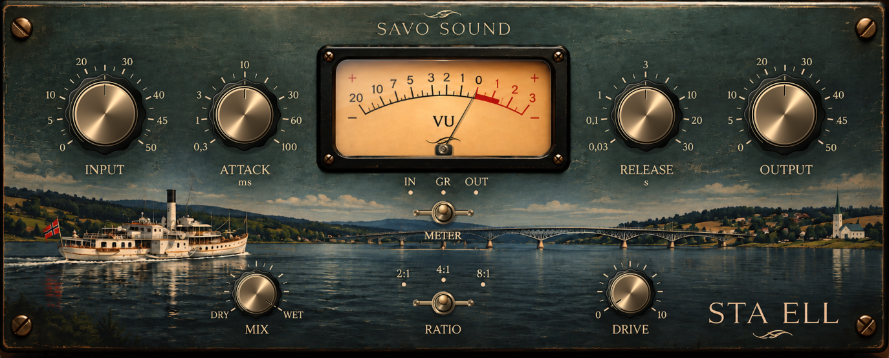

STA ELL is a take on the classic variable-mu compressor — inspired by the character and attitude of the legendary STA-Level, but developed in its own direction.
Rather than trying to create a component-for-component replica of one particular vintage unit, we used the basic idea as a starting point: dense, musical compression that can pull a signal together without simply flattening it. From there, we developed our own compression behaviour, with selectable 2:1, 4:1 and 8:1 ratios and attack and release controls that let STA ELL move from gentle levelling to considerably firmer compression.
The analogue colour surrounding the compressor is also our own design. The input and output stages are voiced around our own choices of tube and transformer character, adding harmonic density, low-mid weight and subtle nonlinear movement without sacrificing the open top end. As the compressor works harder, the colour and dynamics interact rather than behaving like completely separate effects.
The result isn't intended to be a digital clone of a STA-Level. It's what happened when we took the things we love about that kind of old variable-mu compression, chose our own signal path and voicing, and built a compressor around the way we wanted it to feel: weighty, open, responsive and capable of sounding good even with only a few dB of gain reduction.
STA ELL?!
Unzip the downloaded file and copy STA ELL.vst3 to:
~/Library/Audio/Plug-Ins/VST3/Restart your DAW and rescan your plugins if necessary.
DOWNLOADUnzip the downloaded file and copy STA ELL.vst3 to:
C:\Program Files\Common Files\VST3\Restart your DAW and rescan your plugins if necessary.
DOWNLOAD